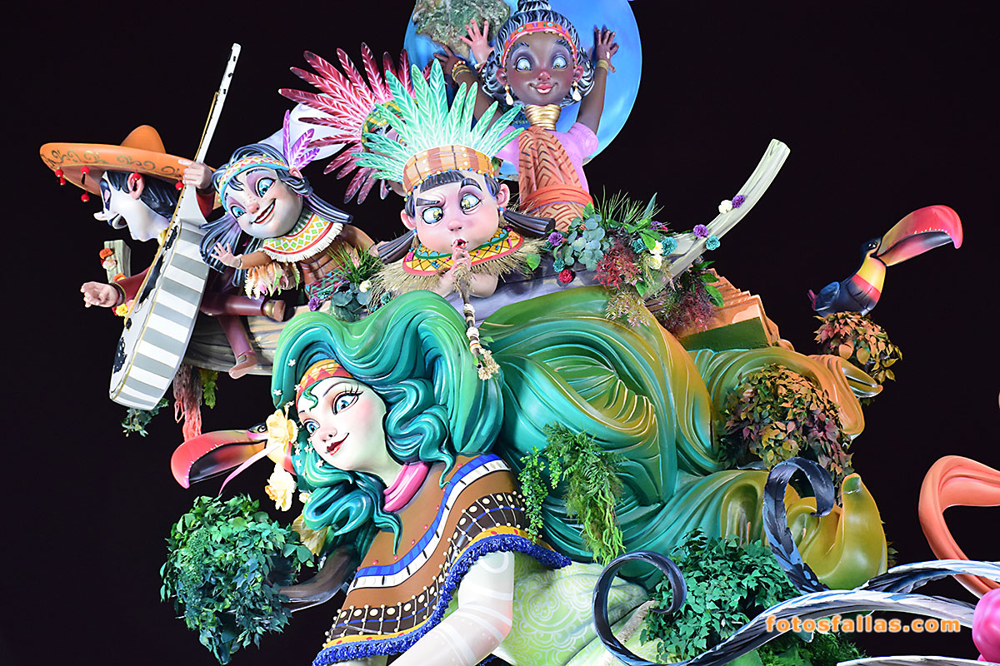
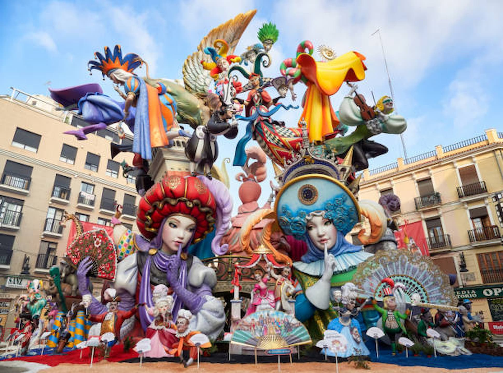
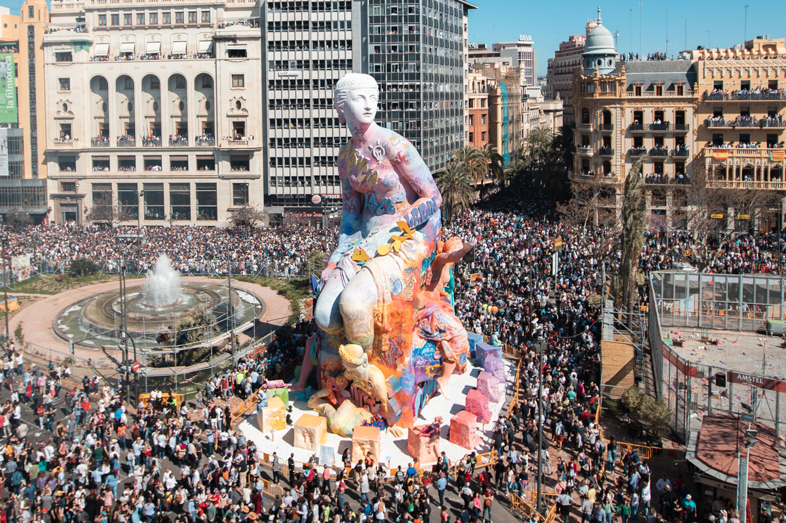
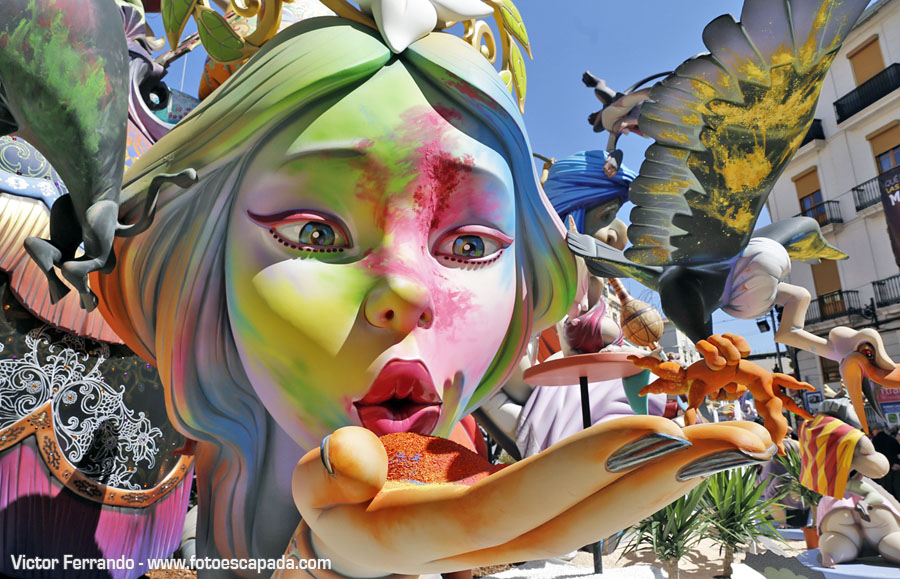
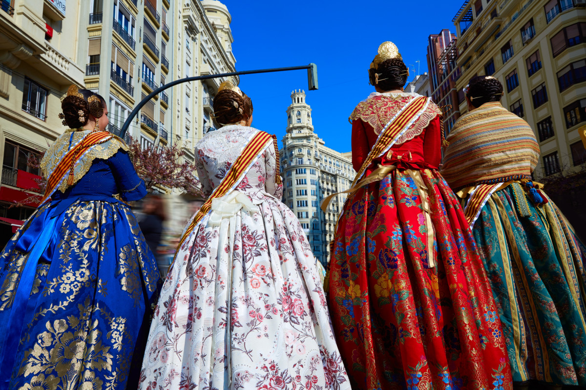
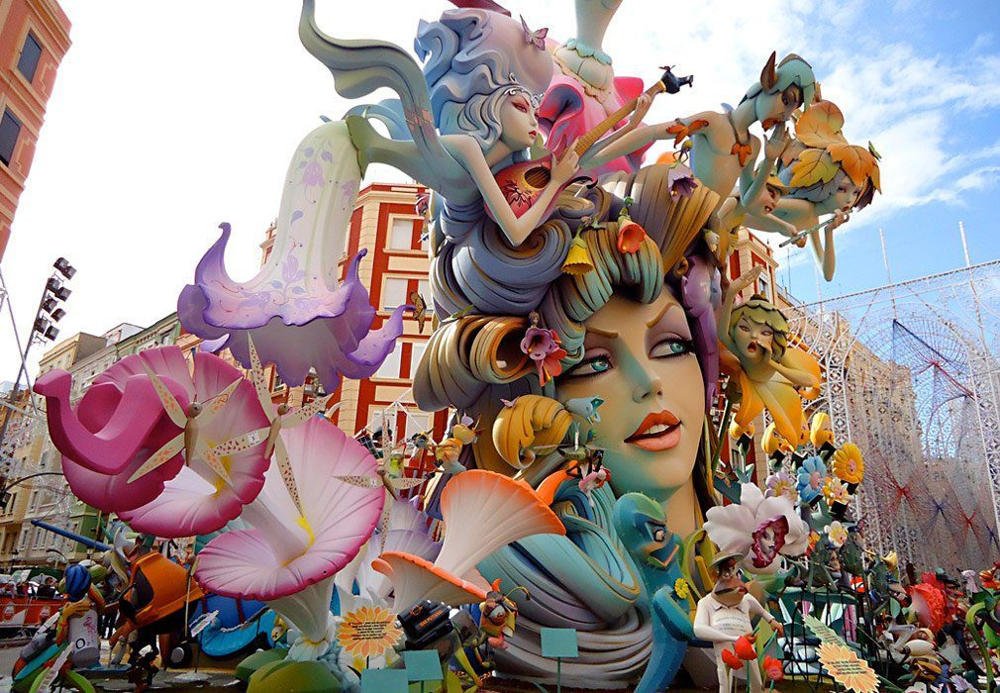
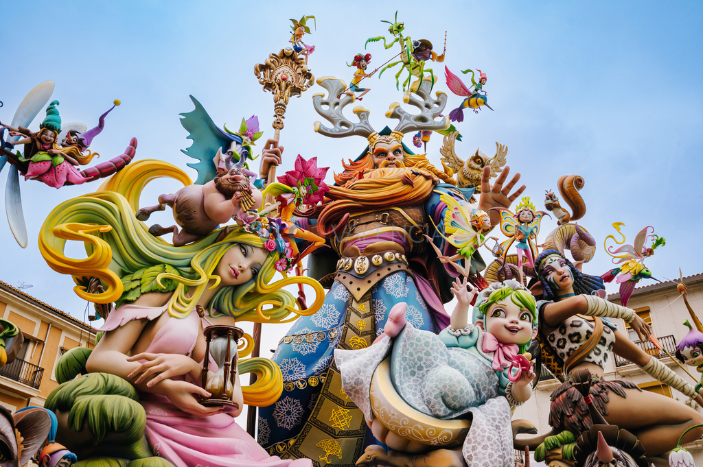

Crida
La Crida marca el inicio oficial de las Fallas en València. Desde las Torres de Serranos, las máximas representantes de la fiesta invitan a toda la ciudad y a quienes la visitan a sumarse a una celebración llena de arte, tradición, emoción y cultura popular.
Es uno de los momentos más esperados porque simboliza la apertura de días intensos en los que València se transforma por completo. La música, las luces, el entusiasmo del público y el valor simbólico del acto convierten esta ceremonia en una experiencia profundamente representativa del espíritu fallero.
La Crida no solo anuncia el comienzo de la fiesta: también expresa la identidad de una ciudad que vive sus tradiciones con pasión y que abre sus puertas para compartirlas con vecinos, visitantes y personas de todo el mundo.
Ninot tradicional
Los ninots son una de las expresiones más características de las Fallas. Cada figura está trabajada con gran detalle y representa escenas de la vida cotidiana, personajes conocidos o críticas sociales. Su valor artístico y creativo convierte a cada monumento en una obra única dentro de la fiesta.
Escena fallera
Las escenas falleras combinan humor, tradición y cultura popular. A través de composiciones llamativas y personajes exagerados, muestran situaciones que invitan a mirar, pensar y disfrutar. Son una parte esencial del recorrido por las calles durante las celebraciones.


Detalle artístico
Cada falla incluye detalles artísticos que reflejan horas de trabajo, planificación y dedicación. Los colores, las formas y las terminaciones muestran el talento de los artistas falleros, que convierten cada monumento en una pieza visual impactante para vecinos y visitantes.
Color y creatividad
El color y la creatividad forman parte del alma de las Fallas. Cada monumento destaca por su fuerza visual y por la manera en que mezcla imaginación, sátira y tradición. Esta combinación hace que la experiencia de recorrer la ciudad durante las fiestas sea inolvidable.


Monumento fallero
Los monumentos falleros sorprenden por su tamaño, su color y el enorme trabajo que hay detrás de cada composición. Son el resultado de meses de preparación y representan uno de los mayores atractivos visuales de la fiesta.
Arte en las calles
Durante las Fallas, las calles de València se convierten en una gran exposición al aire libre. Cada recorrido ofrece nuevas escenas, nuevos detalles y una forma distinta de vivir el arte popular valenciano.


Tradición fallera
La tradición fallera reúne historia, trabajo artesanal y participación de toda la comunidad. Cada imagen refleja no solo belleza visual, sino también el valor cultural de una celebración profundamente arraigada en València.
Creatividad valenciana
La creatividad valenciana se expresa en cada figura, en cada color y en cada escena representada. Las Fallas combinan imaginación y técnica para crear monumentos que impactan tanto por su mensaje como por su presencia.

Cremà
La Cremà es el acto final de las Fallas y uno de los momentos más impactantes de toda la celebración. Durante esa noche, los monumentos falleros arden en medio de un ambiente cargado de emoción, despedida y espectáculo.
Después de días de fiesta, música, color y tradición, el fuego marca el cierre de un ciclo. Es un instante muy esperado porque reúne a vecinos, visitantes y comisiones falleras en torno a una experiencia única.